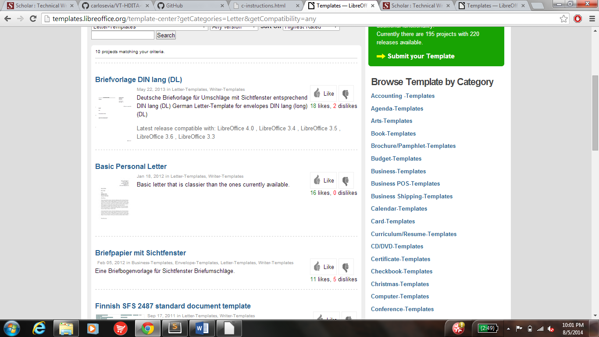

 ---
layout: base
title: "How to use LibreOffice to write a letter"
---
<article data-hd-class="task"> 
<h1>How to use LibreOffice to write a Letter!</h1> 
<p>LibreOffice allows you to many things, such as write letters!</p> 
<section data-hd-class="task/context"> 
	<h2>Context</h2>
<p>This will allow you to use LibreOffice to write letters! </p>
</section> 
<section data-hd-class="task/prereq"> 
<h2>Pre-requisites</h2>  
<ul> 
<li>Have LibreOffice downloaded</li>
<li>Have access to internet</li>
</ul> 
</section> 
<section data-hd-class="task/steps-informal"> 
<h2>Steps</h2>
<ol> 
<li>Go to templates.libreoffice.org</li>
<li>Click on the Templates tab</li>
<li>Under select category, select letters-templates</li>
<li>Pick the template you would like to use</li>
<li>Download the template</li>
<li>Open LibreOffice from your desktop</li> 
<li>Click Writer Document, under Create:</li>
<li>Click File, Templates and Manage</li>
<li>Open a new file with your template selected</li>
<li>Type up your letter according to your template</li>
</ol> 
</section>
<section data-hd-class="task/example">
<h2>Example</h2>
<p>Your screen should look something like this when you go to select a template <em>(Figure 1)</em></p>
<figure>
  
  <figcaption>Figure 1: LibreOffice Letters Templates</figcaption>
</figure>
	<a href="c-instructions.html">Home Page</a>
</section>
</article>
